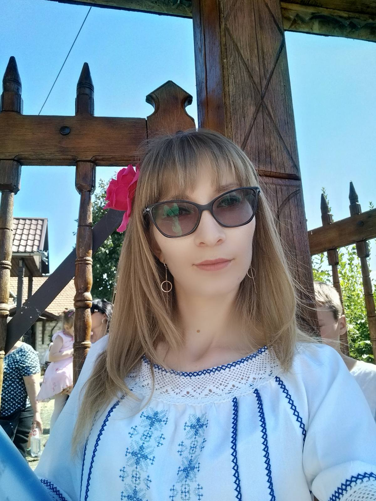
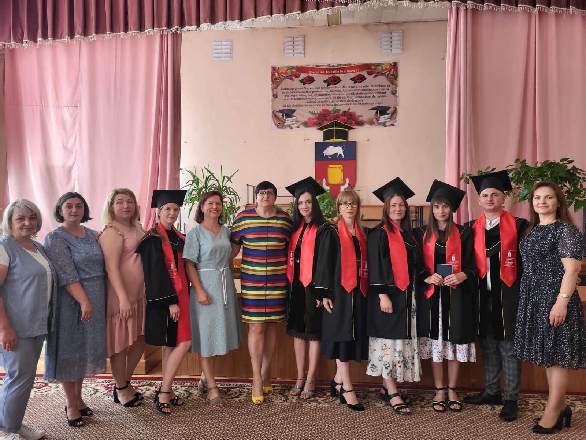
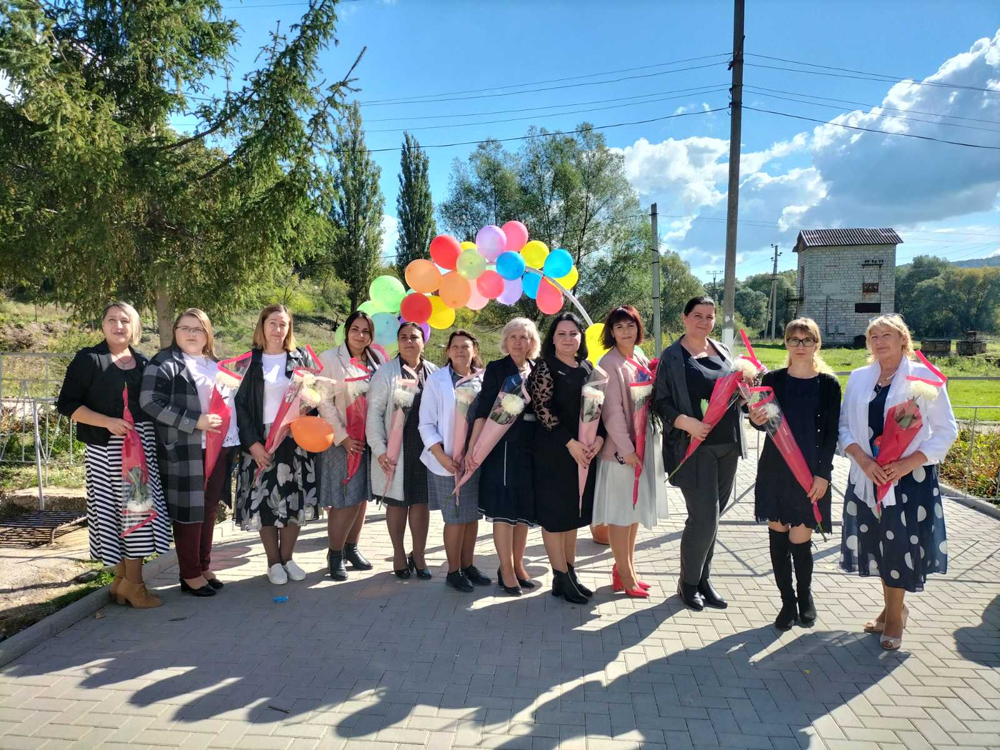
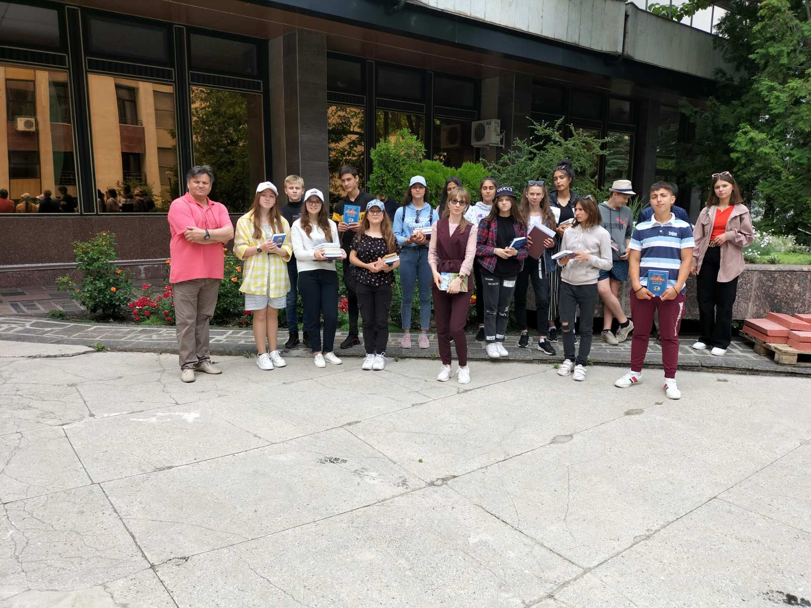

Ana Jalba
|
Profesor
Româna, Engleza, Rusa anavictordanu@gmail.com +37369758153 |
Sunt o profesoară din Republica Moldova care a absolvit Universitatea de Stat din Tiraspol cu sediul la Chișinău. Activez ca profesoară de limba și literatura română în Instituția Publică Gimnaziul Hîrjauca din anul 2020. Limba română este tărâmul unde simt că pot evada pentru a afla lucruri noi. |
|  |  |  |  |
Experiența de lucru
Profesoară
Septembrie 2020 - PrezentProfesoară de limba și literatura română în IP Gimnaziul Hîrjauca, r. Călărași
Educație
Studii Superioare de Master
Septembrie 2020 - iunie 2022UST Formare profesională la programul de studii Limba și literatura românână contemporană și tehnologii educaționale
Studii Superioare de Licență
Septembrie 2016 - iunie 2020UST Formare profesională Educație și formarea profesorilor la programul de studii Limba și literatura românână